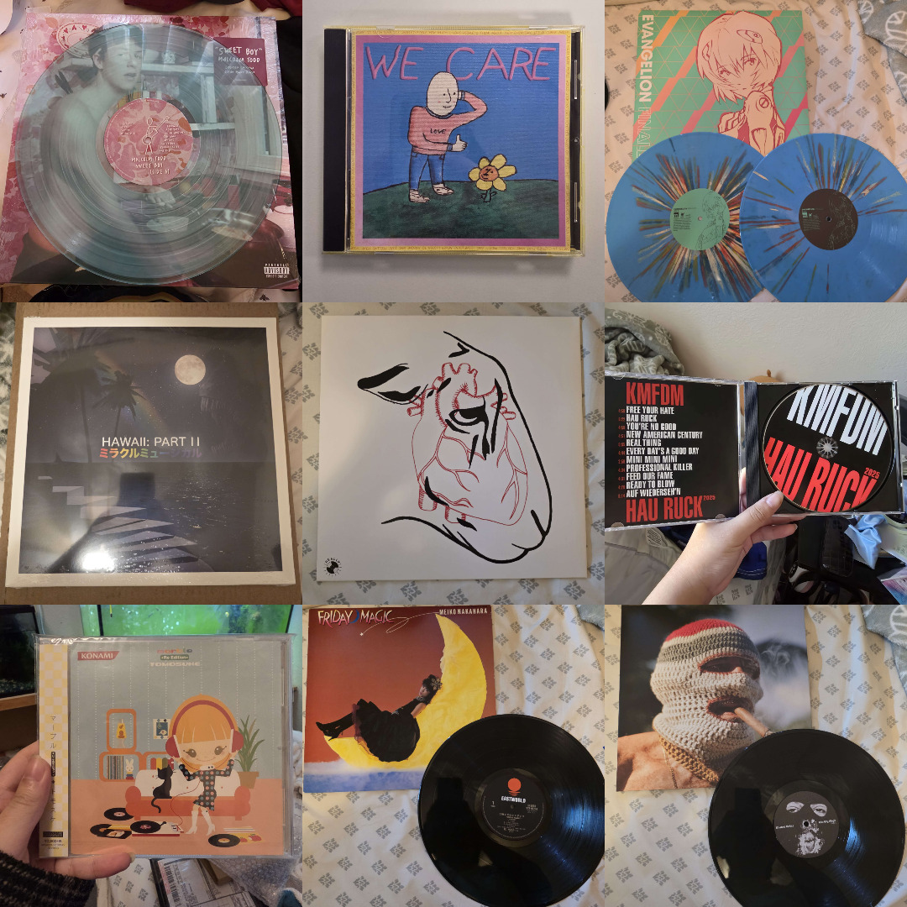
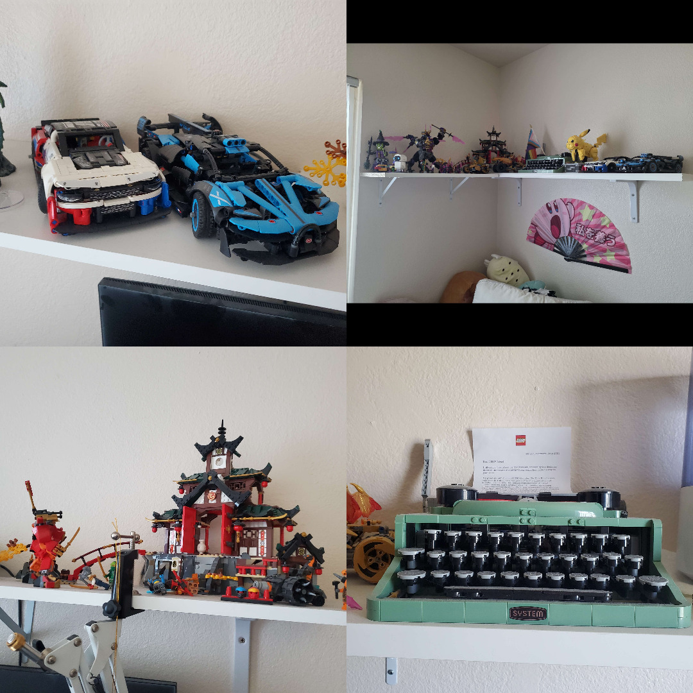
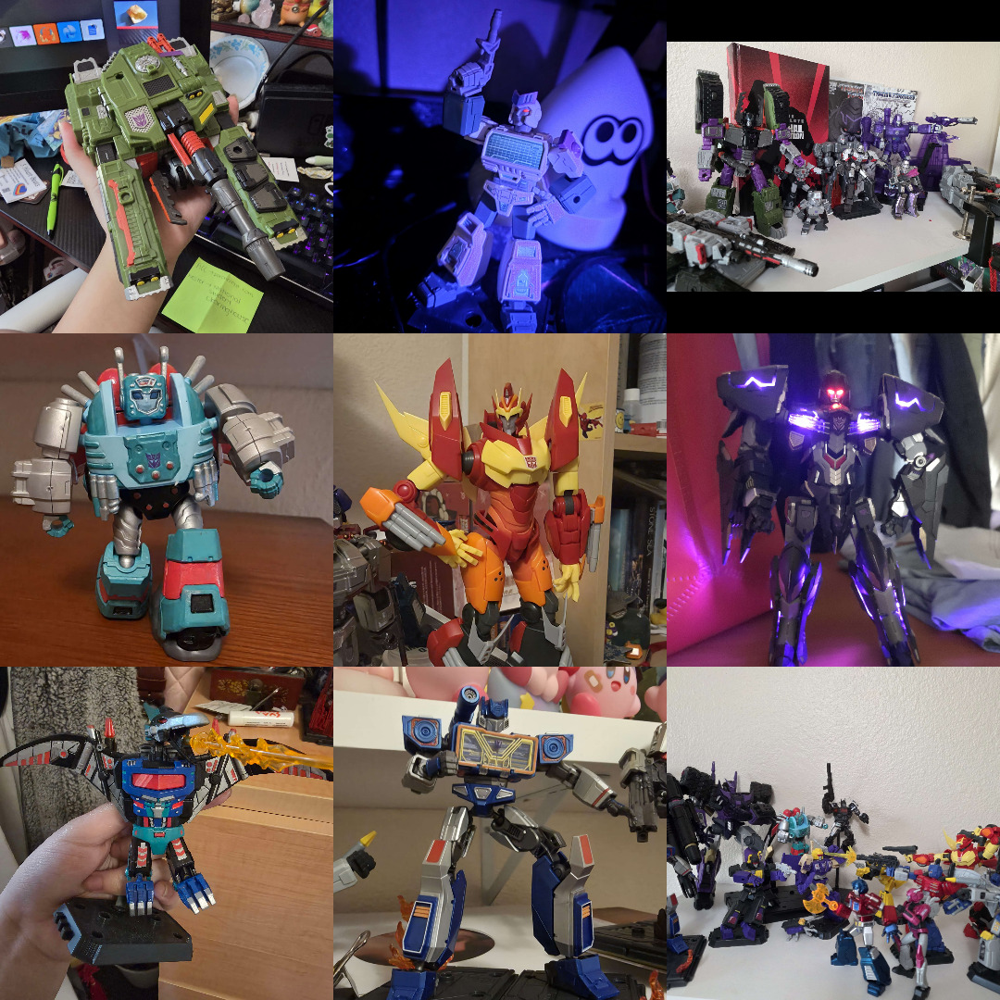
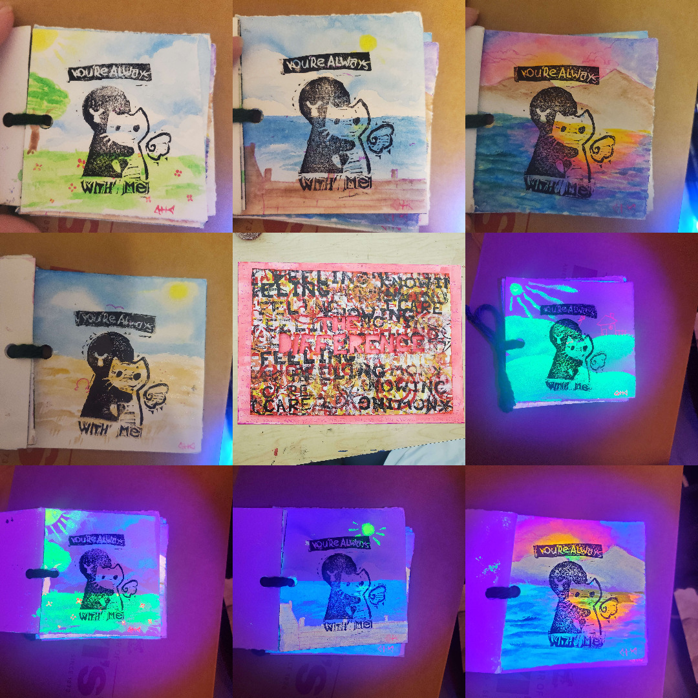

I began my collection in 2022 when I first bought my first vinyl record: I Can't Handle Change / I'm Not Here to Make Friends by ROAR, a Double EP pressed on transparent orange. Being a record from my favorite band, it meant a lot to me, and I found myself buying more of the records released by this band, and eventually branching out to new bands. I now own around 20 records, and I don't plan on stopping.
I started buying CDs more often when I got my first CD player. A lot of my favorite indie bands release their albums as digital files, and I buy and download them, then burn them onto my own CDs. It's kind of fun being able to design the CD and also format the sleeve. My CD collection isn't nearly as cool as my record collection, but I am still proud of it.


When I was younger, me and my brother would often get Lego sets as presents. I loved to assemble them and cherish the final product. My brother, on the other hand, preferred to use the pieces to create his own builds. But something we both loved doing was playing with the figures and making up stories and scenarios. I think that those moments were what a lot of my imaginative skills stemmed from. Now that I am an adult, I no longer play with Legos, but I still enjoy assembling them, some of my favorites being from the Lego Technic line.
When I was younger, I used to watch Transformers: Animated (2007) with my brother. I told myself, "Wow, when I grow up, I want to be a motorcycle." Now, obviously, there is no way for me to become a motorcycle, but the joy of loving Transformers has always stayed with me. I began collecting Transformers toys recently, my favorite character being Megatron. I love the functionality that many of them have, and they are a large reason why I wanted to pursue Industrial Design.


I also make traditional art, in fact, I make traditional art more so than digital art. I like trying all sorts of traditional mediums such as watercolor or linoleum printing. My favorite way to apply these skills are in mixed media, where I can basically do whatever I want. I think that any type of art is important because it gives an opportunity to exercise your creative mind.